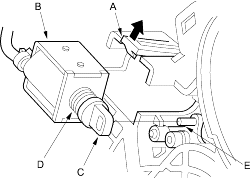
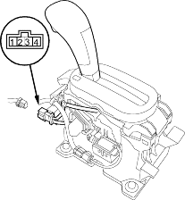

- Remove the shift assembly (see page 14-138).
- Remove the D3 switch and A/T gear position indicator panel light socket, then remove the indicator light bulb from the socket.
- Pull the lock tab (A) up, then remove the shift lock solenoid (B).

- Install the shift lock solenoid plunger (C) and plunger spring (D) in the new shift lock solenoid.
- Install the shift lock solenoid by aligning the joint of the shift lock solenoid plunger with the tip (E) of the shift lock/reverse lock stop.
- Install the D3 switch in the shift lever bracket base.
- Install the A/T gear position indicator panel light bulb in the socket, then install the indicator panel light socket in the indicator panel.
- Install the shift lever assembly (see page 14-141).
- Remove the centre console panel and centre console (see page 20-73).
- Disconnect the park pin switch connector (4P).

- Shift to
 position, then check for continuity between the No. 3 and No. 4 terminals. There should be no continuity.
position, then check for continuity between the No. 3 and No. 4 terminals. There should be no continuity. - Shift out of position and check for continuity between terminals No. 3 and No. 4. There should be continuity.
- If the park pin switch is faulty, replace it.